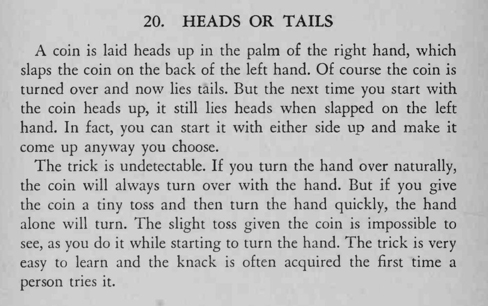

硬币先正面朝上，拍到左手背上就翻成反面；再演一次，无论起手哪面朝上，拍上去都是同一面，观众看不出门道。
抛得越小越好；诀窍多半试一两次就能找到手感。

A coin is laid heads up in the palm of the right hand, which slaps the coin on the back of the left hand. Of course the coin is turned over and now lies tails. But the next time you start with the coin heads up, it still lies heads when slapped on the left hand. In fact, you can start it with either side up and make it come up anyway you choose. The trick is undetectable. If you turn the hand over naturally, the coin will always turn over with the hand. But if you give the coin a tiny toss and then turn the hand quickly, the hand alone will turn. The slight toss given the coin is impossible to see, as you do it while starting to turn the hand. The trick is very easy to learn and the knack is often acquired the first time a person tries it.